整趟四张图
逐弯核对
T1 · 后刃搓雪
09:52:09.82 – 09:52:10.70（0.9 秒）
离心力 0.25 g施压时机 65% 在滚落线前Peak 点 晚 （滚落线后 45%）
左脚（前脚）Peak 晚 · 施压时机 3% ｜ 右脚（后脚）Peak 晚 · 施压时机 2%
T2 · 后刃搓雪
09:52:10.70 – 09:52:11.66（1.0 秒）
离心力 0.56 g施压时机 56% 在滚落线前Peak 点 晚 （滚落线后 46%）
左脚（前脚）Peak 晚 · 施压时机 26% ｜ 右脚（后脚）Peak 早 · 施压时机 88%
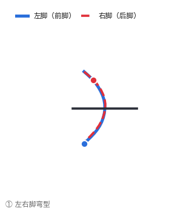
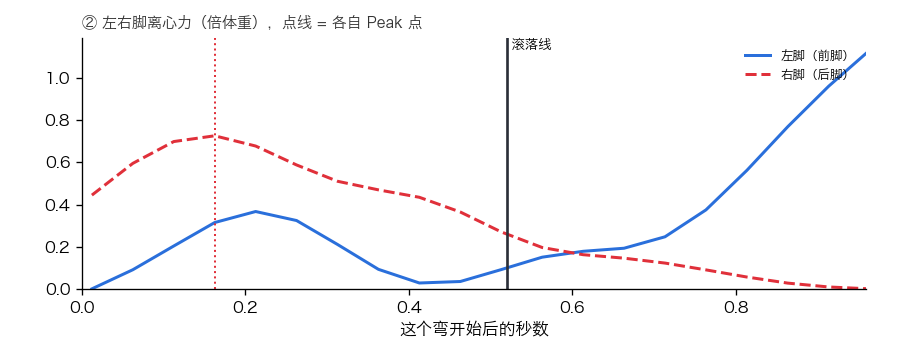
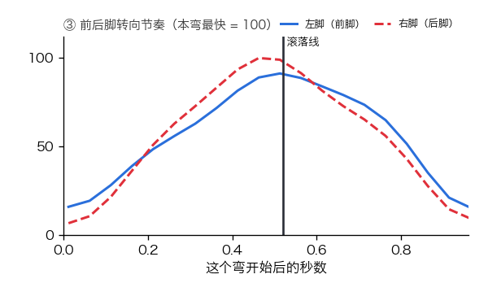
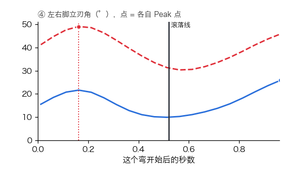
T3 · 后刃搓雪
09:52:11.66 – 09:52:12.46（0.8 秒）
离心力 0.46 g施压时机 76% 在滚落线前Peak 点 早 （滚落线前 55%）
左脚（前脚）Peak 早 · 施压时机 90% ｜ 右脚（后脚）Peak 早 · 施压时机 30%
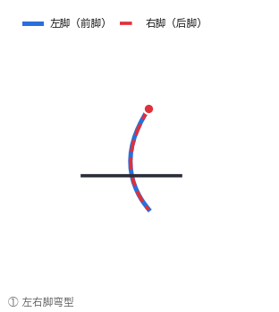
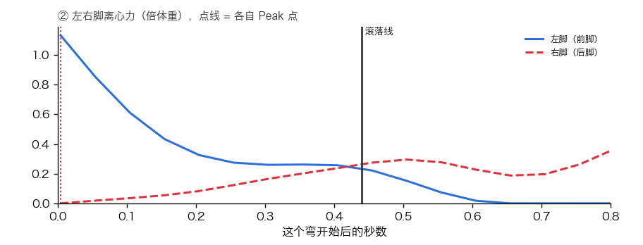
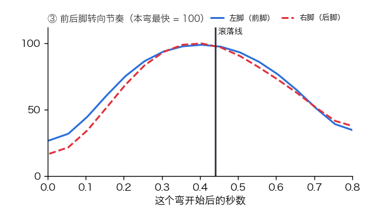
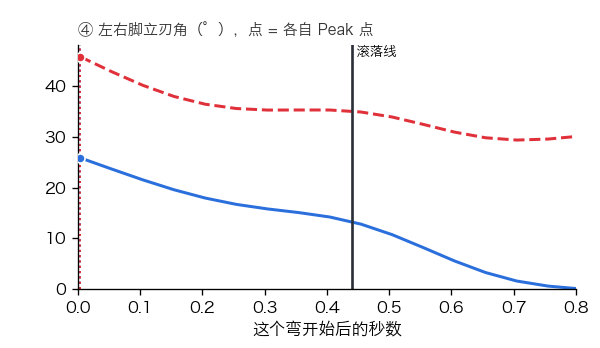
T4 · 前刃搓雪
09:52:12.46 – 09:52:18.22（5.8 秒）
离心力 0.59 g施压时机 5% 在滚落线前Peak 点 晚 （滚落线后 55%）
左脚（前脚）Peak 晚 · 施压时机 24% ｜ 右脚（后脚）Peak 准 · 施压时机 6%
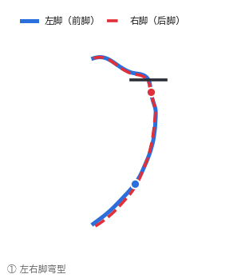
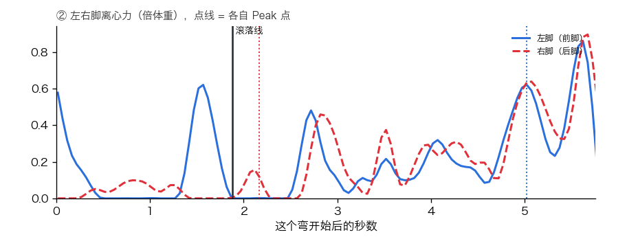
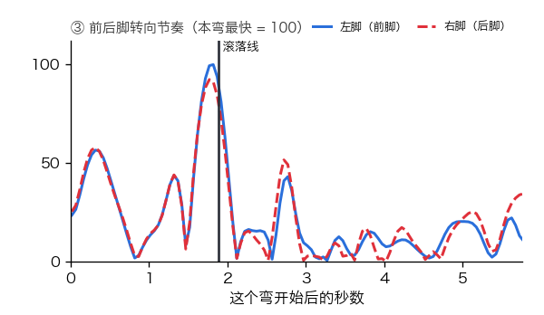
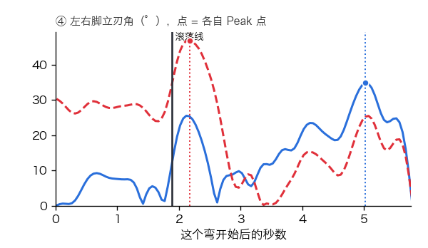
T5 · 后刃走刃
09:52:18.22 – 09:52:19.82（1.6 秒）
离心力 1.67 g施压时机 49% 在滚落线前Peak 点 准 （滚落线前后 10% 内）
左脚（前脚）Peak 准 · 施压时机 49% ｜ 右脚（后脚）Peak 准 · 施压时机 48%
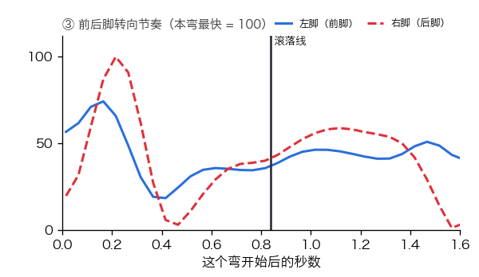
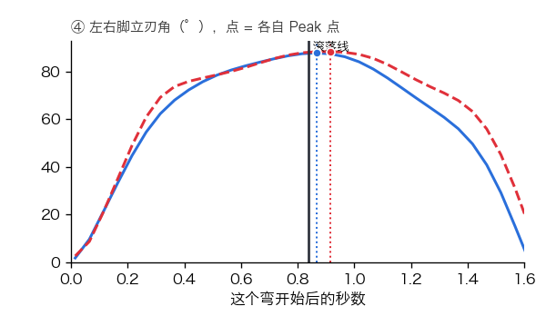
T6 · 前刃走刃
09:52:19.82 – 09:52:21.18（1.4 秒）
离心力 2.39 g施压时机 42% 在滚落线前Peak 点 准 （滚落线前后 10% 内）
左脚（前脚）Peak 准 · 施压时机 45% ｜ 右脚（后脚）Peak 准 · 施压时机 41%
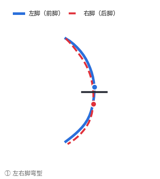
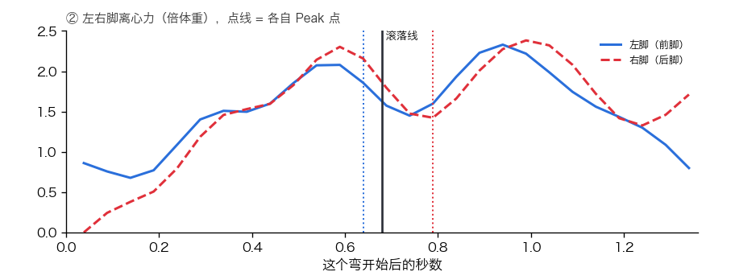
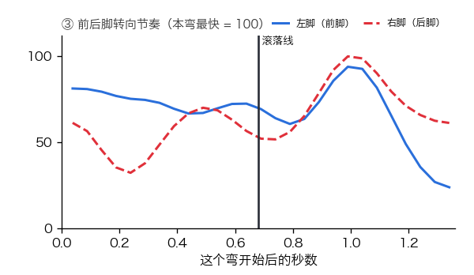
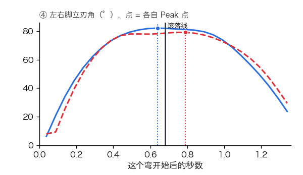
T7 · 后刃走刃
09:52:21.18 – 09:52:22.90（1.7 秒）
离心力 1.72 g施压时机 39% 在滚落线前Peak 点 准 （滚落线前后 10% 内）
左脚（前脚）Peak 准 · 施压时机 40% ｜ 右脚（后脚）Peak 准 · 施压时机 39%
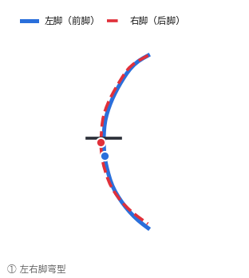
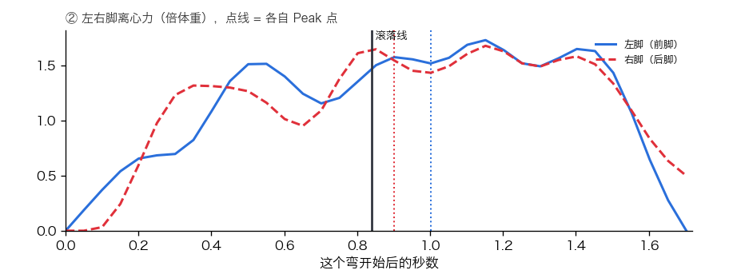
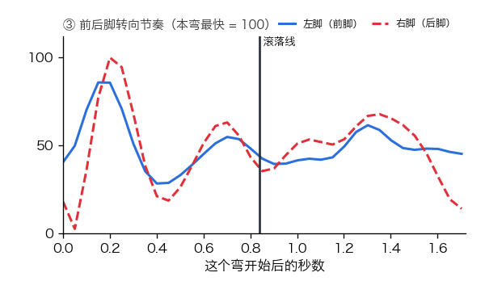
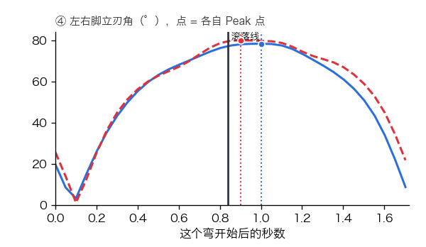
T8 · 前刃走刃
09:52:22.90 – 09:52:24.30（1.4 秒）
离心力 2.30 g施压时机 42% 在滚落线前Peak 点 准 （滚落线前后 10% 内）
左脚（前脚）Peak 准 · 施压时机 46% ｜ 右脚（后脚）Peak 准 · 施压时机 43%
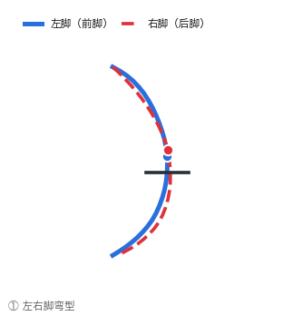
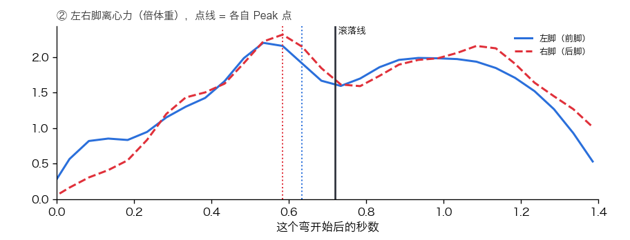
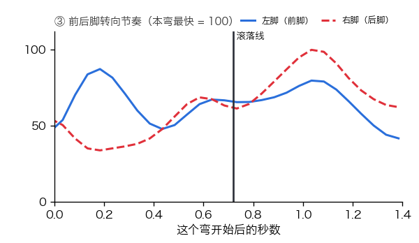
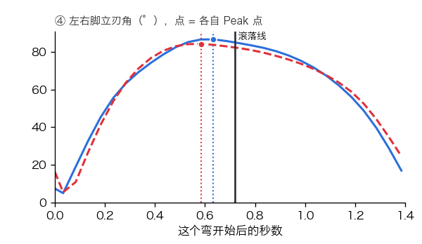
T9 · 后刃走刃
09:52:24.30 – 09:52:25.98（1.7 秒）
离心力 1.97 g施压时机 41% 在滚落线前Peak 点 晚 （滚落线后 14%）
左脚（前脚）Peak 晚 · 施压时机 43% ｜ 右脚（后脚）Peak 晚 · 施压时机 39%
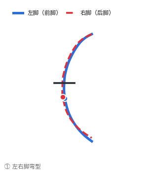
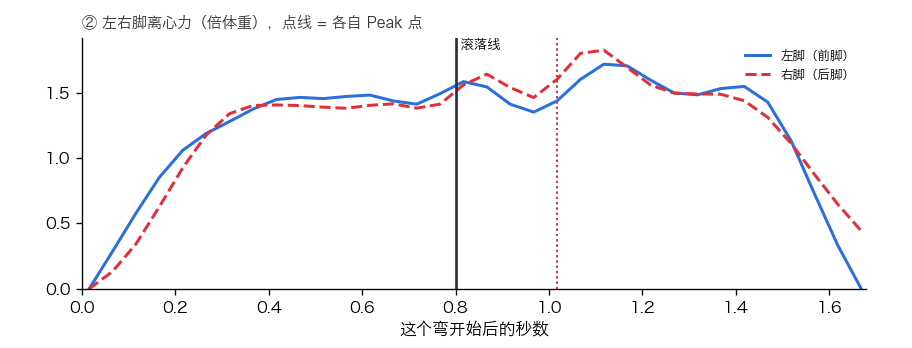
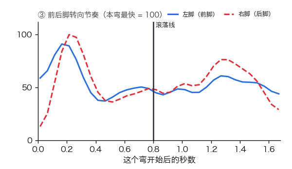
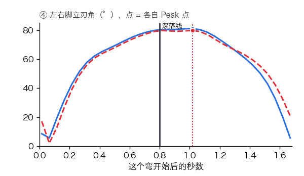
T10 · 前刃走刃
09:52:25.98 – 09:52:27.38（1.4 秒）
离心力 2.17 g施压时机 48% 在滚落线前Peak 点 准 （滚落线前后 10% 内）
左脚（前脚）Peak 准 · 施压时机 53% ｜ 右脚（后脚）Peak 准 · 施压时机 51%
T11 · 后刃走刃
09:52:27.38 – 09:52:29.22（1.8 秒）
离心力 1.90 g施压时机 43% 在滚落线前Peak 点 晚 （滚落线后 13%）
左脚（前脚）Peak 晚 · 施压时机 45% ｜ 右脚（后脚）Peak 准 · 施压时机 41%
T12 · 前刃走刃
09:52:29.22 – 09:52:30.34（1.1 秒）
离心力 1.97 g施压时机 31% 在滚落线前Peak 点 晚 （滚落线后 11%）
左脚（前脚）Peak 晚 · 施压时机 36% ｜ 右脚（后脚）Peak 晚 · 施压时机 31%
T13 · 后刃搓雪
09:52:30.34 – 09:52:31.42（1.1 秒）
离心力 1.35 g施压时机 28% 在滚落线前Peak 点 晚 （滚落线后 22%）
左脚（前脚）Peak 晚 · 施压时机 33% ｜ 右脚（后脚）Peak 晚 · 施压时机 32%
T14 · 前刃走刃
09:52:31.42 – 09:52:32.22（0.8 秒）
离心力 1.58 g施压时机 34% 在滚落线前Peak 点 准 （滚落线前后 10% 内）
左脚（前脚）Peak 准 · 施压时机 46% ｜ 右脚（后脚）Peak 准 · 施压时机 37%
T15 · 后刃搓雪
09:52:32.22 – 09:52:33.14（0.9 秒）
离心力 1.51 g施压时机 24% 在滚落线前Peak 点 晚 （滚落线后 22%）
左脚（前脚）Peak 晚 · 施压时机 24% ｜ 右脚（后脚）Peak 晚 · 施压时机 23%
T16 · 前刃走刃
09:52:33.14 – 09:52:34.06（0.9 秒）
离心力 1.74 g施压时机 39% 在滚落线前Peak 点 晚 （滚落线后 13%）
左脚（前脚）Peak 准 · 施压时机 46% ｜ 右脚（后脚）Peak 准 · 施压时机 36%
T17 · 后刃搓雪
09:52:34.06 – 09:52:35.10（1.0 秒）
离心力 1.53 g施压时机 25% 在滚落线前Peak 点 晚 （滚落线后 19%）
左脚（前脚）Peak 晚 · 施压时机 23% ｜ 右脚（后脚）Peak 晚 · 施压时机 23%
T18 · 前刃走刃
09:52:35.10 – 09:52:36.10（1.0 秒）
离心力 1.60 g施压时机 31% 在滚落线前Peak 点 晚 （滚落线后 20%）
左脚（前脚）Peak 晚 · 施压时机 36% ｜ 右脚（后脚）Peak 晚 · 施压时机 28%
T19 · 后刃走刃
09:52:36.10 – 09:52:37.06（1.0 秒）
离心力 1.69 g施压时机 41% 在滚落线前Peak 点 准 （滚落线前后 10% 内）
左脚（前脚）Peak 准 · 施压时机 45% ｜ 右脚（后脚）Peak 准 · 施压时机 42%
T20 · 前刃走刃
09:52:37.06 – 09:52:38.06（1.0 秒）
离心力 1.93 g施压时机 38% 在滚落线前Peak 点 准 （滚落线前后 10% 内）
左脚（前脚）Peak 准 · 施压时机 46% ｜ 右脚（后脚）Peak 准 · 施压时机 38%
T21 · 后刃走刃
09:52:38.06 – 09:52:39.50（1.4 秒）
离心力 1.34 g施压时机 33% 在滚落线前Peak 点 晚 （滚落线后 25%）
左脚（前脚）Peak 晚 · 施压时机 36% ｜ 右脚（后脚）Peak 晚 · 施压时机 35%
T22 · 前刃搓雪
09:52:39.50 – 09:52:44.30（4.8 秒）
离心力 0.75 g施压时机 64% 在滚落线前Peak 点 晚 （滚落线后 27%）
左脚（前脚）Peak 晚 · 施压时机 65% ｜ 右脚（后脚）Peak 晚 · 施压时机 64%
T23 · 后刃搓雪
09:52:44.30 – 09:52:45.50（1.2 秒）
离心力 0.82 g施压时机 40% 在滚落线前Peak 点 准 （滚落线前后 10% 内）
左脚（前脚）Peak 早 · 施压时机 58% ｜ 右脚（后脚）Peak 晚 · 施压时机 32%
T24 · 后刃搓雪
09:52:45.50 – 09:52:48.22（2.7 秒）
离心力 0.34 g施压时机 42% 在滚落线前Peak 点 准 （滚落线前后 10% 内）
左脚（前脚）Peak 准 · 施压时机 35% ｜ 右脚（后脚）Peak 早 · 施压时机 0%
整趟四张图
逐弯核对
T1 · 后刃搓雪
09:55:52.18 – 09:55:58.06（5.9 秒）
离心力 0.68 g施压时机 42% 在滚落线前Peak 点 准 （滚落线前后 10% 内）
左脚（前脚）Peak 准 · 施压时机 50% ｜ 右脚（后脚）Peak 准 · 施压时机 38%
T2 · 后刃搓雪
09:55:58.06 – 09:56:01.06（3.0 秒）
离心力 0.10 g施压时机 76% 在滚落线前Peak 点 晚 （滚落线后 37%）
左脚（前脚）Peak 晚 · 施压时机 85% ｜ 右脚（后脚）Peak 早 · 施压时机 53%
T3 · 后刃搓雪
09:56:01.06 – 09:56:02.34（1.3 秒）
离心力 0.07 g施压时机 86% 在滚落线前Peak 点 早 （滚落线前 50%）
左脚（前脚）Peak 早 · 施压时机 94% ｜ 右脚（后脚）Peak 晚 · 施压时机 15%
T4 · 前刃搓雪
09:56:02.34 – 09:56:07.14（4.8 秒）
离心力 1.00 g施压时机 2% 在滚落线前Peak 点 晚 （滚落线后 65%）
左脚（前脚）Peak 晚 · 施压时机 9% ｜ 右脚（后脚）Peak 晚 · 施压时机 2%
T5 · 后刃走刃
09:56:07.14 – 09:56:08.86（1.7 秒）
离心力 2.11 g施压时机 52% 在滚落线前Peak 点 早 （滚落线前 21%）
左脚（前脚）Peak 早 · 施压时机 54% ｜ 右脚（后脚）Peak 早 · 施压时机 53%
T6 · 前刃走刃
09:56:08.86 – 09:56:10.34（1.5 秒）
离心力 2.31 g施压时机 37% 在滚落线前Peak 点 晚 （滚落线后 14%）
左脚（前脚）Peak 晚 · 施压时机 42% ｜ 右脚（后脚）Peak 晚 · 施压时机 38%
T7 · 后刃走刃
09:56:10.34 – 09:56:12.06（1.7 秒）
离心力 1.80 g施压时机 44% 在滚落线前Peak 点 准 （滚落线前后 10% 内）
左脚（前脚）Peak 准 · 施压时机 47% ｜ 右脚（后脚）Peak 准 · 施压时机 46%
T8 · 前刃走刃
09:56:12.06 – 09:56:13.46（1.4 秒）
离心力 2.19 g施压时机 37% 在滚落线前Peak 点 准 （滚落线前后 10% 内）
左脚（前脚）Peak 准 · 施压时机 41% ｜ 右脚（后脚）Peak 准 · 施压时机 35%
T9 · 后刃走刃
09:56:13.46 – 09:56:15.46（2.0 秒）
离心力 1.70 g施压时机 51% 在滚落线前Peak 点 准 （滚落线前后 10% 内）
左脚（前脚）Peak 准 · 施压时机 52% ｜ 右脚（后脚）Peak 晚 · 施压时机 50%
T10 · 前刃走刃
09:56:15.46 – 09:56:17.18（1.7 秒）
离心力 1.85 g施压时机 38% 在滚落线前Peak 点 早 （滚落线前 12%）
左脚（前脚）Peak 早 · 施压时机 40% ｜ 右脚（后脚）Peak 早 · 施压时机 36%
T11 · 后刃走刃
09:56:17.18 – 09:56:18.98（1.8 秒）
离心力 1.72 g施压时机 48% 在滚落线前Peak 点 准 （滚落线前后 10% 内）
左脚（前脚）Peak 准 · 施压时机 50% ｜ 右脚（后脚）Peak 准 · 施压时机 47%
T12 · 前刃走刃
09:56:18.98 – 09:56:20.26（1.3 秒）
离心力 1.59 g施压时机 35% 在滚落线前Peak 点 晚 （滚落线后 12%）
左脚（前脚）Peak 晚 · 施压时机 38% ｜ 右脚（后脚）Peak 准 · 施压时机 33%
T13 · 后刃走刃
09:56:20.26 – 09:56:21.26（1.0 秒）
离心力 1.56 g施压时机 22% 在滚落线前Peak 点 晚 （滚落线后 24%）
左脚（前脚）Peak 晚 · 施压时机 24% ｜ 右脚（后脚）Peak 晚 · 施压时机 21%
T14 · 前刃走刃
09:56:21.26 – 09:56:22.02（0.8 秒）
离心力 1.91 g施压时机 33% 在滚落线前Peak 点 准 （滚落线前后 10% 内）
左脚（前脚）Peak 准 · 施压时机 39% ｜ 右脚（后脚）Peak 准 · 施压时机 25%
T15 · 后刃搓雪
09:56:22.02 – 09:56:23.10（1.1 秒）
离心力 1.20 g施压时机 21% 在滚落线前Peak 点 晚 （滚落线后 30%）
左脚（前脚）Peak 晚 · 施压时机 25% ｜ 右脚（后脚）Peak 晚 · 施压时机 21%
T16 · 前刃走刃
09:56:23.10 – 09:56:23.90（0.8 秒）
离心力 1.48 g施压时机 32% 在滚落线前Peak 点 准 （滚落线前后 10% 内）
左脚（前脚）Peak 准 · 施压时机 44% ｜ 右脚（后脚）Peak 晚 · 施压时机 33%
T17 · 后刃走刃
09:56:23.90 – 09:56:24.90（1.0 秒）
离心力 1.39 g施压时机 21% 在滚落线前Peak 点 晚 （滚落线后 28%）
左脚（前脚）Peak 晚 · 施压时机 21% ｜ 右脚（后脚）Peak 晚 · 施压时机 18%
T18 · 前刃走刃
09:56:24.90 – 09:56:25.66（0.8 秒）
离心力 1.74 g施压时机 35% 在滚落线前Peak 点 准 （滚落线前后 10% 内）
左脚（前脚）Peak 准 · 施压时机 39% ｜ 右脚（后脚）Peak 准 · 施压时机 28%
T19 · 后刃走刃
09:56:25.66 – 09:56:26.66（1.0 秒）
离心力 1.46 g施压时机 27% 在滚落线前Peak 点 晚 （滚落线后 16%）
左脚（前脚）Peak 晚 · 施压时机 29% ｜ 右脚（后脚）Peak 晚 · 施压时机 27%
T20 · 前刃走刃
09:56:26.66 – 09:56:27.50（0.8 秒）
离心力 1.99 g施压时机 37% 在滚落线前Peak 点 准 （滚落线前后 10% 内）
左脚（前脚）Peak 准 · 施压时机 42% ｜ 右脚（后脚）Peak 准 · 施压时机 32%
T21 · 后刃走刃
09:56:27.50 – 09:56:28.54（1.0 秒）
离心力 1.65 g施压时机 28% 在滚落线前Peak 点 晚 （滚落线后 15%）
左脚（前脚）Peak 晚 · 施压时机 35% ｜ 右脚（后脚）Peak 晚 · 施压时机 33%
T22 · 前刃走刃
09:56:28.54 – 09:56:30.10（1.6 秒）
离心力 0.80 g施压时机 45% 在滚落线前Peak 点 准 （滚落线前后 10% 内）
左脚（前脚）Peak 准 · 施压时机 50% ｜ 右脚（后脚）Peak 早 · 施压时机 45%
T23 · 后刃搓雪
09:56:30.10 – 09:56:31.58（1.5 秒）
离心力 0.72 g施压时机 31% 在滚落线前Peak 点 晚 （滚落线后 19%）
左脚（前脚）Peak 晚 · 施压时机 35% ｜ 右脚（后脚）Peak 晚 · 施压时机 28%
T24 · 前刃搓雪
09:56:31.58 – 09:56:33.98（2.4 秒）
离心力 0.63 g施压时机 40% 在滚落线前Peak 点 晚 （滚落线后 25%）
左脚（前脚）Peak 晚 · 施压时机 43% ｜ 右脚（后脚）Peak 晚 · 施压时机 41%
T25 · 后刃搓雪
09:56:33.98 – 09:56:35.30（1.3 秒）
离心力 0.64 g施压时机 47% 在滚落线前Peak 点 早 （滚落线前 15%）
左脚（前脚）Peak 早 · 施压时机 65% ｜ 右脚（后脚）Peak 晚 · 施压时机 35%
T26 · 后刃搓雪
09:56:35.30 – 09:56:38.66（3.4 秒）
离心力 0.43 g施压时机 47% 在滚落线前Peak 点 早 （滚落线前 20%）
左脚（前脚）Peak 早 · 施压时机 39% ｜ 右脚（后脚）Peak 晚 · 施压时机 36%
整趟四张图
逐弯核对
T1 · 后刃搓雪
10:00:08.54 – 10:00:15.86（7.3 秒）
离心力 0.44 g施压时机 61% 在滚落线前Peak 点 准 （滚落线前后 10% 内）
左脚（前脚）Peak 准 · 施压时机 65% ｜ 右脚（后脚）Peak 准 · 施压时机 58%
T2 · 后刃搓雪
10:00:15.86 – 10:00:17.54（1.7 秒）
离心力 0.24 g施压时机 60% 在滚落线前Peak 点 准 （滚落线前后 10% 内）
左脚（前脚）Peak 准 · 施压时机 50% ｜ 右脚（后脚）Peak 早 · 施压时机 72%
T3 · 后刃搓雪
10:00:17.54 – 10:00:19.02（1.5 秒）
离心力 0.06 g施压时机 22% 在滚落线前Peak 点 早 （滚落线前 46%）
左脚（前脚）Peak 早 · 施压时机 71% ｜ 右脚（后脚）Peak 晚 · 施压时机 3%
T4 · 后刃搓雪
10:00:19.02 – 10:00:20.30（1.3 秒）
离心力 0.19 g施压时机 87% 在滚落线前Peak 点 晚 （滚落线后 19%）
左脚（前脚）Peak 晚 · 施压时机 81% ｜ 右脚（后脚）Peak 早 · 施压时机 53%
T5 · 后刃搓雪
10:00:20.30 – 10:00:20.82（0.5 秒）
离心力 0.25 g施压时机 56% 在滚落线前Peak 点 早 （滚落线前 38%）
左脚（前脚）Peak 早 · 施压时机 88% ｜ 右脚（后脚）Peak 晚 · 施压时机 1%
T6 · 前刃搓雪
10:00:20.82 – 10:00:24.86（4.0 秒）
离心力 0.90 g施压时机 1% 在滚落线前Peak 点 晚 （滚落线后 79%）
左脚（前脚）Peak 晚 · 施压时机 13% ｜ 右脚（后脚）Peak 准 · 施压时机 5%
T7 · 前刃走刃
10:00:26.58 – 10:00:28.18（1.6 秒）
离心力 1.81 g施压时机 39% 在滚落线前Peak 点 早 （滚落线前 12%）
左脚（前脚）Peak 早 · 施压时机 42% ｜ 右脚（后脚）Peak 早 · 施压时机 38%
T8 · 前刃走刃
10:00:29.98 – 10:00:31.46（1.5 秒）
离心力 2.28 g施压时机 42% 在滚落线前Peak 点 准 （滚落线前后 10% 内）
左脚（前脚）Peak 准 · 施压时机 44% ｜ 右脚（后脚）Peak 早 · 施压时机 41%
T9 · 前刃走刃
10:00:33.34 – 10:00:34.94（1.6 秒）
离心力 1.76 g施压时机 35% 在滚落线前Peak 点 准 （滚落线前后 10% 内）
左脚（前脚）Peak 准 · 施压时机 38% ｜ 右脚（后脚）Peak 早 · 施压时机 36%
T10 · 前刃走刃
10:00:36.78 – 10:00:37.90（1.1 秒）
离心力 2.11 g施压时机 36% 在滚落线前Peak 点 晚 （滚落线后 11%）
左脚（前脚）Peak 晚 · 施压时机 40% ｜ 右脚（后脚）Peak 晚 · 施压时机 35%
T11 · 后刃搓雪
10:00:37.90 – 10:00:38.66（0.8 秒）
离心力 1.85 g施压时机 23% 在滚落线前Peak 点 晚 （滚落线后 21%）
左脚（前脚）Peak 晚 · 施压时机 25% ｜ 右脚（后脚）Peak 晚 · 施压时机 21%
T12 · 前刃走刃
10:00:38.66 – 10:00:39.46（0.8 秒）
离心力 2.01 g施压时机 31% 在滚落线前Peak 点 准 （滚落线前后 10% 内）
左脚（前脚）Peak 准 · 施压时机 35% ｜ 右脚（后脚）Peak 早 · 施压时机 31%
T13 · 后刃搓雪
10:00:39.46 – 10:00:40.50（1.0 秒）
离心力 1.82 g施压时机 15% 在滚落线前Peak 点 晚 （滚落线后 27%）
左脚（前脚）Peak 晚 · 施压时机 15% ｜ 右脚（后脚）Peak 晚 · 施压时机 13%
T14 · 前刃搓雪
10:00:40.50 – 10:00:41.26（0.8 秒）
离心力 1.60 g施压时机 36% 在滚落线前Peak 点 准 （滚落线前后 10% 内）
左脚（前脚）Peak 准 · 施压时机 42% ｜ 右脚（后脚）Peak 早 · 施压时机 31%
T15 · 前刃搓雪
10:00:42.18 – 10:00:42.94（0.8 秒）
离心力 1.73 g施压时机 32% 在滚落线前Peak 点 准 （滚落线前后 10% 内）
左脚（前脚）Peak 准 · 施压时机 39% ｜ 右脚（后脚）Peak 早 · 施压时机 27%
T16 · 后刃搓雪
10:00:42.94 – 10:00:43.90（1.0 秒）
离心力 1.67 g施压时机 15% 在滚落线前Peak 点 晚 （滚落线后 21%）
左脚（前脚）Peak 晚 · 施压时机 19% ｜ 右脚（后脚）Peak 晚 · 施压时机 14%
T17 · 前刃搓雪
10:00:43.90 – 10:00:44.62（0.7 秒）
离心力 1.61 g施压时机 30% 在滚落线前Peak 点 准 （滚落线前后 10% 内）
左脚（前脚）Peak 准 · 施压时机 37% ｜ 右脚（后脚）Peak 晚 · 施压时机 25%
T18 · 后刃走刃
10:00:44.62 – 10:00:45.62（1.0 秒）
离心力 1.74 g施压时机 17% 在滚落线前Peak 点 晚 （滚落线后 28%）
左脚（前脚）Peak 晚 · 施压时机 15% ｜ 右脚（后脚）Peak 晚 · 施压时机 17%
T19 · 前刃走刃
10:00:45.62 – 10:00:46.54（0.9 秒）
离心力 1.72 g施压时机 36% 在滚落线前Peak 点 准 （滚落线前后 10% 内）
左脚（前脚）Peak 准 · 施压时机 37% ｜ 右脚（后脚）Peak 早 · 施压时机 29%
T20 · 前刃搓雪
10:00:48.70 – 10:00:52.86（4.2 秒）
离心力 0.51 g施压时机 48% 在滚落线前Peak 点 准 （滚落线前后 10% 内）
左脚（前脚）Peak 准 · 施压时机 50% ｜ 右脚（后脚）Peak 早 · 施压时机 46%
T21 · 后刃搓雪
10:00:52.86 – 10:00:54.30（1.4 秒）
离心力 0.77 g施压时机 44% 在滚落线前Peak 点 准 （滚落线前后 10% 内）
左脚（前脚）Peak 准 · 施压时机 56% ｜ 右脚（后脚）Peak 准 · 施压时机 30%
T22 · 后刃搓雪
10:00:54.30 – 10:00:55.86（1.6 秒）
离心力 0.20 g施压时机 24% 在滚落线前Peak 点 晚 （滚落线后 33%）
左脚（前脚）Peak 晚 · 施压时机 14% ｜ 右脚（后脚）Peak 早 · 施压时机 44%
整趟四张图
逐弯核对
T1 · 前刃搓雪
10:06:45.10 – 10:06:48.82（3.7 秒）
离心力 0.78 g施压时机 34% 在滚落线前Peak 点 晚 （滚落线后 20%）
左脚（前脚）Peak 晚 · 施压时机 36% ｜ 右脚（后脚）Peak 早 · 施压时机 36%
T2 · 前刃走刃
10:06:50.34 – 10:06:51.74（1.4 秒）
离心力 2.14 g施压时机 34% 在滚落线前Peak 点 准 （滚落线前后 10% 内）
左脚（前脚）Peak 准 · 施压时机 39% ｜ 右脚（后脚）Peak 早 · 施压时机 31%
T3 · 后刃走刃
10:06:51.74 – 10:06:53.42（1.7 秒）
离心力 1.97 g施压时机 48% 在滚落线前Peak 点 准 （滚落线前后 10% 内）
左脚（前脚）Peak 准 · 施压时机 46% ｜ 右脚（后脚）Peak 准 · 施压时机 47%
T4 · 前刃走刃
10:06:53.42 – 10:06:54.86（1.4 秒）
离心力 2.36 g施压时机 39% 在滚落线前Peak 点 准 （滚落线前后 10% 内）
左脚（前脚）Peak 准 · 施压时机 45% ｜ 右脚（后脚）Peak 准 · 施压时机 34%
T5 · 后刃走刃
10:06:54.86 – 10:06:56.70（1.8 秒）
离心力 1.83 g施压时机 51% 在滚落线前Peak 点 早 （滚落线前 11%）
左脚（前脚）Peak 早 · 施压时机 52% ｜ 右脚（后脚）Peak 准 · 施压时机 48%
T6 · 前刃走刃
10:06:56.70 – 10:06:58.18（1.5 秒）
离心力 2.02 g施压时机 38% 在滚落线前Peak 点 准 （滚落线前后 10% 内）
左脚（前脚）Peak 准 · 施压时机 39% ｜ 右脚（后脚）Peak 准 · 施压时机 39%
T7 · 后刃搓雪
10:06:58.18 – 10:06:59.30（1.1 秒）
离心力 2.14 g施压时机 24% 在滚落线前Peak 点 晚 （滚落线后 18%）
左脚（前脚）Peak 晚 · 施压时机 25% ｜ 右脚（后脚）Peak 晚 · 施压时机 24%
T8 · 前刃走刃
10:06:59.30 – 10:07:00.06（0.8 秒）
离心力 1.69 g施压时机 33% 在滚落线前Peak 点 准 （滚落线前后 10% 内）
左脚（前脚）Peak 准 · 施压时机 38% ｜ 右脚（后脚）Peak 早 · 施压时机 22%
T9 · 后刃搓雪
10:07:00.06 – 10:07:00.94（0.9 秒）
离心力 1.70 g施压时机 16% 在滚落线前Peak 点 晚 （滚落线后 23%）
左脚（前脚）Peak 晚 · 施压时机 18% ｜ 右脚（后脚）Peak 晚 · 施压时机 13%
T10 · 前刃走刃
10:07:00.94 – 10:07:01.70（0.8 秒）
离心力 2.00 g施压时机 30% 在滚落线前Peak 点 晚 （滚落线后 11%）
左脚（前脚）Peak 准 · 施压时机 36% ｜ 右脚（后脚）Peak 早 · 施压时机 22%
T11 · 后刃走刃
10:07:01.70 – 10:07:02.58（0.9 秒）
离心力 1.84 g施压时机 18% 在滚落线前Peak 点 晚 （滚落线后 18%）
左脚（前脚）Peak 晚 · 施压时机 24% ｜ 右脚（后脚）Peak 晚 · 施压时机 14%
T12 · 前刃走刃
10:07:02.58 – 10:07:03.42（0.8 秒）
离心力 1.73 g施压时机 28% 在滚落线前Peak 点 晚 （滚落线后 14%）
左脚（前脚）Peak 晚 · 施压时机 30% ｜ 右脚（后脚）Peak 晚 · 施压时机 19%
T13 · 后刃走刃
10:07:03.42 – 10:07:04.34（0.9 秒）
离心力 1.69 g施压时机 20% 在滚落线前Peak 点 晚 （滚落线后 22%）
左脚（前脚）Peak 晚 · 施压时机 24% ｜ 右脚（后脚）Peak 晚 · 施压时机 14%
T14 · 前刃搓雪
10:07:04.34 – 10:07:05.10（0.8 秒）
离心力 2.10 g施压时机 33% 在滚落线前Peak 点 晚 （滚落线后 11%）
左脚（前脚）Peak 晚 · 施压时机 37% ｜ 右脚（后脚）Peak 晚 · 施压时机 29%
T15 · 后刃搓雪
10:07:05.10 – 10:07:07.26（2.2 秒）
离心力 1.69 g施压时机 62% 在滚落线前Peak 点 早 （滚落线前 19%）
左脚（前脚）Peak 早 · 施压时机 69% ｜ 右脚（后脚）Peak 早 · 施压时机 55%
T16 · 后刃搓雪
10:07:07.26 – 10:07:15.78（8.5 秒）
离心力 0.38 g施压时机 36% 在滚落线前Peak 点 早 （滚落线前 10%）
左脚（前脚）Peak 早 · 施压时机 21% ｜ 右脚（后脚）Peak 早 · 施压时机 47%
整趟四张图
逐弯核对
T1 · 前刃搓雪
10:15:20.78 – 10:15:21.86（1.1 秒）
离心力 2.05 g施压时机 22% 在滚落线前Peak 点 准 （滚落线前后 10% 内）
左脚（前脚）Peak 准 · 施压时机 42% ｜ 右脚（后脚）Peak 早 · 施压时机 20%
T2 · 后刃搓雪
10:15:21.86 – 10:15:22.70（0.8 秒）
离心力 2.09 g施压时机 12% 在滚落线前Peak 点 晚 （滚落线后 24%）
左脚（前脚）Peak 晚 · 施压时机 17% ｜ 右脚（后脚）Peak 晚 · 施压时机 10%
T3 · 前刃搓雪
10:15:22.70 – 10:15:23.38（0.7 秒）
离心力 2.62 g施压时机 14% 在滚落线前Peak 点 晚 （滚落线后 18%）
左脚（前脚）Peak 晚 · 施压时机 16% ｜ 右脚（后脚）Peak 晚 · 施压时机 8%
T4 · 后刃搓雪
10:15:23.38 – 10:15:24.26（0.9 秒）
离心力 1.70 g施压时机 10% 在滚落线前Peak 点 晚 （滚落线后 18%）
左脚（前脚）Peak 晚 · 施压时机 16% ｜ 右脚（后脚）Peak 晚 · 施压时机 1%
T5 · 前刃搓雪
10:15:24.26 – 10:15:25.02（0.8 秒）
离心力 2.52 g施压时机 13% 在滚落线前Peak 点 晚 （滚落线后 21%）
左脚（前脚）Peak 晚 · 施压时机 26% ｜ 右脚（后脚）Peak 晚 · 施压时机 10%
T6 · 后刃搓雪
10:15:25.02 – 10:15:25.90（0.9 秒）
离心力 2.07 g施压时机 17% 在滚落线前Peak 点 晚 （滚落线后 23%）
左脚（前脚）Peak 晚 · 施压时机 24% ｜ 右脚（后脚）Peak 晚 · 施压时机 14%
T7 · 前刃搓雪
10:15:25.90 – 10:15:26.62（0.7 秒）
离心力 2.18 g施压时机 9% 在滚落线前Peak 点 晚 （滚落线后 17%）
左脚（前脚）Peak 晚 · 施压时机 23% ｜ 右脚（后脚）Peak 晚 · 施压时机 4%
T8 · 后刃搓雪
10:15:26.62 – 10:15:27.46（0.8 秒）
离心力 2.00 g施压时机 16% 在滚落线前Peak 点 晚 （滚落线后 24%）
左脚（前脚）Peak 晚 · 施压时机 21% ｜ 右脚（后脚）Peak 晚 · 施压时机 13%
T9 · 前刃搓雪
10:15:27.46 – 10:15:28.30（0.8 秒）
离心力 2.17 g施压时机 20% 在滚落线前Peak 点 晚 （滚落线后 14%）
左脚（前脚）Peak 晚 · 施压时机 30% ｜ 右脚（后脚）Peak 晚 · 施压时机 16%
T10 · 后刃搓雪
10:15:28.30 – 10:15:29.14（0.8 秒）
离心力 2.06 g施压时机 22% 在滚落线前Peak 点 晚 （滚落线后 24%）
左脚（前脚）Peak 晚 · 施压时机 24% ｜ 右脚（后脚）Peak 晚 · 施压时机 22%
T11 · 前刃搓雪
10:15:29.14 – 10:15:29.94（0.8 秒）
离心力 2.40 g施压时机 22% 在滚落线前Peak 点 准 （滚落线前后 10% 内）
左脚（前脚）Peak 晚 · 施压时机 29% ｜ 右脚（后脚）Peak 早 · 施压时机 15%
T12 · 后刃搓雪
10:15:29.94 – 10:15:30.86（0.9 秒）
离心力 1.99 g施压时机 16% 在滚落线前Peak 点 晚 （滚落线后 30%）
左脚（前脚）Peak 晚 · 施压时机 16% ｜ 右脚（后脚）Peak 晚 · 施压时机 12%
T13 · 前刃走刃
10:15:30.86 – 10:15:31.62（0.8 秒）
离心力 1.85 g施压时机 33% 在滚落线前Peak 点 晚 （滚落线后 11%）
左脚（前脚）Peak 晚 · 施压时机 40% ｜ 右脚（后脚）Peak 晚 · 施压时机 24%
T14 · 后刃搓雪
10:15:31.62 – 10:15:32.62（1.0 秒）
离心力 1.82 g施压时机 25% 在滚落线前Peak 点 晚 （滚落线后 20%）
左脚（前脚）Peak 晚 · 施压时机 26% ｜ 右脚（后脚）Peak 晚 · 施压时机 16%
T15 · 前刃搓雪
10:15:32.62 – 10:15:33.30（0.7 秒）
离心力 2.00 g施压时机 30% 在滚落线前Peak 点 晚 （滚落线后 12%）
左脚（前脚）Peak 准 · 施压时机 35% ｜ 右脚（后脚）Peak 晚 · 施压时机 17%
T16 · 后刃搓雪
10:15:33.30 – 10:15:34.22（0.9 秒）
离心力 1.77 g施压时机 28% 在滚落线前Peak 点 晚 （滚落线后 13%）
左脚（前脚）Peak 晚 · 施压时机 30% ｜ 右脚（后脚）Peak 晚 · 施压时机 29%
T17 · 前刃搓雪
10:15:34.22 – 10:15:35.02（0.8 秒）
离心力 2.01 g施压时机 23% 在滚落线前Peak 点 晚 （滚落线后 20%）
左脚（前脚）Peak 晚 · 施压时机 29% ｜ 右脚（后脚）Peak 晚 · 施压时机 17%
T18 · 后刃搓雪
10:15:35.02 – 10:15:35.94（0.9 秒）
离心力 1.84 g施压时机 16% 在滚落线前Peak 点 晚 （滚落线后 26%）
左脚（前脚）Peak 晚 · 施压时机 18% ｜ 右脚（后脚）Peak 晚 · 施压时机 13%
T19 · 前刃搓雪
10:15:35.94 – 10:15:36.70（0.8 秒）
离心力 1.86 g施压时机 35% 在滚落线前Peak 点 晚 （滚落线后 16%）
左脚（前脚）Peak 晚 · 施压时机 36% ｜ 右脚（后脚）Peak 晚 · 施压时机 29%
T20 · 后刃搓雪
10:15:36.70 – 10:15:37.74（1.0 秒）
离心力 1.59 g施压时机 14% 在滚落线前Peak 点 晚 （滚落线后 31%）
左脚（前脚）Peak 晚 · 施压时机 16% ｜ 右脚（后脚）Peak 晚 · 施压时机 14%
T21 · 前刃搓雪
10:15:37.74 – 10:15:38.66（0.9 秒）
离心力 1.69 g施压时机 30% 在滚落线前Peak 点 晚 （滚落线后 13%）
左脚（前脚）Peak 晚 · 施压时机 38% ｜ 右脚（后脚）Peak 晚 · 施压时机 26%
T22 · 后刃搓雪
10:15:38.66 – 10:15:39.54（0.9 秒）
离心力 1.59 g施压时机 24% 在滚落线前Peak 点 晚 （滚落线后 23%）
左脚（前脚）Peak 晚 · 施压时机 30% ｜ 右脚（后脚）Peak 晚 · 施压时机 26%
T23 · 前刃走刃
10:15:39.54 – 10:15:40.34（0.8 秒）
离心力 2.11 g施压时机 35% 在滚落线前Peak 点 准 （滚落线前后 10% 内）
左脚（前脚）Peak 准 · 施压时机 52% ｜ 右脚（后脚）Peak 晚 · 施压时机 36%
T24 · 后刃搓雪
10:15:40.34 – 10:15:42.70（2.4 秒）
离心力 1.38 g施压时机 68% 在滚落线前Peak 点 早 （滚落线前 19%）
左脚（前脚）Peak 早 · 施压时机 78% ｜ 右脚（后脚）Peak 早 · 施压时机 57%
T25 · 后刃搓雪
10:15:42.70 – 10:15:48.70（6.0 秒）
离心力 0.52 g施压时机 53% 在滚落线前Peak 点 晚 （滚落线后 77%）
左脚（前脚）Peak 晚 · 施压时机 27% ｜ 右脚（后脚）Peak 准 · 施压时机 69%